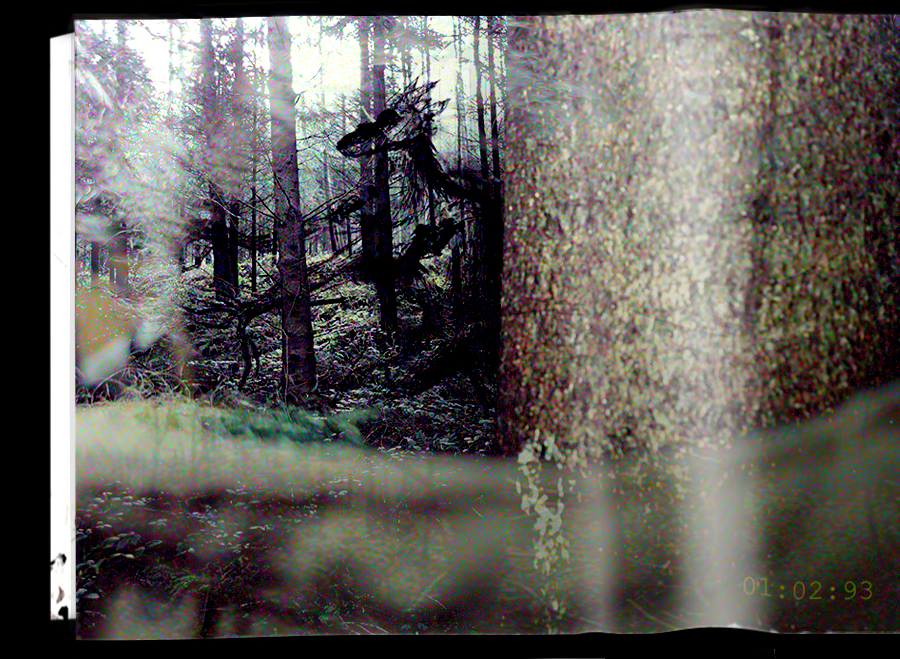

Avirex
photograph taken during Gizmo Dyers 1997 underground expedition
Description
Avirex is the designation given to a peculiar figure found below the surface. He appears with a dragon shaped head and thing gangly limbs. He is known to be capable of human communication and is described as being 'calm', 'passive' and 'a bit of a downer'. He was found residing in the upper levels of the caves, not much else is known about him or his origins.
History/Sightings
He was first discovered during G.D's 1997 underground exploration of the caves. In the expedition logs he is described as being 'calm', 'passive, and ' a bit of a downer'. THe log mentions a brief conversation took place, from which we got the name 'Avirex'. The rest of this conversation however was not recorded or has been lost. He was encountered both on the way down and on the way up, the log mentions that he 'hadn't moved an inch' the whole time. He was left unharmed by the expedition, as there isn't much you can do to a creature already deep down underground. Although, it's safe to assume that if an ORG had been present he would've been mulched up on the spot!
We also believe that this creature might've been sighted above ground as early as 1993, shortly following the defeat of the Leg Lurker. This photograph was taken by a local man foraging for mushrooms in the woods by the edge of town. Whether or not this depicts Avirex or another creature is still up for debate.
photograph taken by hunter from behind a bush
The hunter mentions the creature looked 'sort of dazed' and that it quickly fled once it heard him.
Procedure Report
High priority due to language capability. Deemed passive and non-hostile, further investigation required.